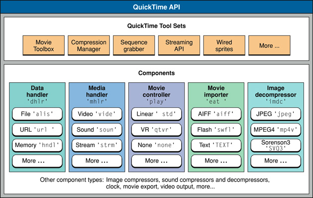
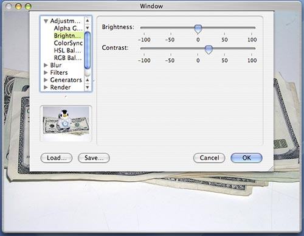

| ADC Home > Reference Library > Technical Notes > QuickTime > Carbon > | |
|
OverviewYou Still Oughta be in PicturesTechnology moves fast, styles change, previous coding techniques may no longer be the trend of the day and unless addressed these changes can quickly render applications dated and stale. This is no different for a platform technology like QuickTime. As Mac OS X continues to evolve at the core, integration technologies like QuickTime need to adopt lower level changes and pass them up to application developers who can then seamlessly adopt the platform's preferred methodologies. The QuickTime 6 series of releases have incrementally moved towards the use of more modern constructs appropriate to Mac OS X. This transition started with the release of QuickTime 6 and the introduction of the Carbon Movie Control. This single API makes working with a Movie Controller in Carbon Event-based applications much easier and faster. QuickTime 6 also introduced a new tasking mechanism designed to improve application performance and the movie storage replacements for the movie file APIs, removing the need to use the antiquated The transition continued though QuickTime 6.4 and later releases introducing greater support for working with Data References; the general way QuickTime describes the location of media data. Core Graphics support for Graphics Importers and Exporters; allowing developers to work with Core Graphics types like This technical note highlights application level changes and lists preferred APIs providing a guide to help developers quickly and easily update older QuickTime code. What do we mean when we say QuickTimeQuickTime has been around for some time now and has a deep rich history. First introduced in May 1991 and originally available for System 6.07 and System 7, it was designed as a full media architecture and offers a complete range of services some of which include: media creation, editing, capture from external devices, delivery via the web, streaming, and of course playback. The QuickTime architecture is based on Components and a number of core Tool Sets; Components are modular pieces of code, each with specific specialized functions that work together to create a very flexible and extensible framework. Figure 1: QuickTime Architecture.  The QuickTime Getting Started Guide provides a great place to begin working though the QuickTime Documentation Roadmap. For a general introduction to QuickTime suitable for programmers of all levels, take a look at the QuickTime Overview document. Over the years, the term "QuickTime" has been applied to several different things:
Where does QuickTime fit in on Mac OS X?QuickTime sits on top of the Imaging, Video and Audio services on Mac OS X. It should be thought of as an integration layer that gives you access to digital media services on the platform. In turn, QuickTime makes use of lower level platform services all of which have APIs that developers can call directly. See the Graphics & Imaging Technology Overview for a full discussion of Mac OS X graphics technology. The FSSpec, Data References and Movie StorageIt shouldn't come as a shock to anyone developing software on Mac OS X that the traditional Mac OS file specification is dead, it is simply no longer suitable for encoding file information for the platform. Yet someone scanning the QuickTime API would see that the QuickTime internally uses the Data Reference abstraction as the general way to describe the location of media data. QuickTime however, previously relied on a specialized set of functions for dealing with files using A Data Reference consists of an QuickTime currently defines the following Data Handler OSTypes:
As an example, a Data Reference to a file stored on a local volume would consist of an A Data Reference can also be described using a struct DataReferenceRecord {
OSType dataRefType;
Handle dataRef;
};
typedef struct DataReferenceRecord DataReferenceRecord;
typedef DataReferenceRecord * DataReferencePtr;
For a detailed discussion of Data References and their extensions, refer to Technical Note TN1195, 'Tagging Handle and Pointer Data References in QuickTime' Working with Movie Storage and Data ReferencesQuickTime 6 introduced a set of APIs to completely replace the older Table 1 lists the older Table 1 : Movie Storage & Movie Data Reference APIs added in QuickTime 6 releases.
Table 2 lists two APIs which add Data Reference functionality to Table 2 : Data Reference APIs with added functionality in QuickTime 6.
The Movie Storage APIs provide a more general way to create storage containers that can be accessed by data handlers. Let's directly compare a couple of the calls.
CreateMovieFile(const FSSpec *fileSpec, OSType creator, ScriptCode scriptTag,
long createMovieFileFlags, short *resRefNum, Movie *newmovie)
CreateMovieStorage(Handle dataRef, OSType dataRefType, OSType creator,
ScriptCode scriptTag, long createMovieFileFlags,
DataHandler *outDataHandler, Movie *newmovie)
Notice how Modernizing your code and moving to the Movie Storage APIs is easy, the older calls simply map directly to the newer calls and are straight forward replacements. There are two older APIs which should be discussed in this section, they are Many QuickTime application open movie files by performing this older sequence of calls: Listing 1: Older method. Booolean OpenMovie(FSSpecPtr inFSSpec)
{
Movie myMovie = NULL;
short myRefNum = kInvalidFileRefNum;
short myResID = 0;
OSErr myErr = noErr;
...
// open the movie file
myErr = OpenMovieFile(inFSSpec, &myRefNum, fsRdPerm);
if (myErr != noErr) goto bail;
// get the Movie
myErr = NewMovieFromFile(&myMovie, myRefNum, &myResID, NULL, newMovieActive, NULL);
if (myErr != noErr) goto bail;
// close the movie file - we no longer need it
CloseMovieFile(myRefNum);
// remember to call DisposeMovie when done with the returned Movie
...
}
The replacement for the above sequence of calls is simple. There's couple of minor differences; you don't need to specifically Open or Close the container and you'll need to create a Data Reference specifying the location of the file. Creating the Data Reference is easy and QuickTime provides a number of utility functions to help create Data References (these are discussed in the next section), but you'll have to resist the urge to call The modern sequence looks like this: Listing 2: Modern method. Booolean OpenMovie(CFStringRef inPath)
{
Movie myMovie = NULL;
OSType myDataRefType;
Handle myDataRef = NULL;
short myResID = 0;
OSErr myErr = noErr;
...
// create the data reference
myErr = QTNewDataReferenceFromFullPathCFString(inPath, kQTNativeDefaultPathStyle,
0, &myDataRef, &myDataRefType);
if (myErr != noErr) goto bail;
// get the Movie
myErr = NewMovieFromDataRef(&myMovie, newMovieActive,
&myResID, myDataRef, myDataRefType);
if (myErr != noErr) goto bail;
// dispose the data reference handle - we no longer need it
DisposeHandle(myDataRef);
// remember to call DisposeMovie when done with the returned Movie
...
}
The following code snippets show how to perform a few common operations using the Movie Storage APIs: Listing 3: Save a Movie with dependencies to a file. OSStatus WriteMovieWithDependenciesToFile(Movie inMovie, CFStringRef inPath)
{
Handle dataRef = NULL;
OSType dataRefType;
DataHandler dataHandler = 0;
OSStatus err;
// create the data refenrece
err = QTNewDataReferenceFromFullPathCFString(inPath, kQTNativeDefaultPathStyle, 0,
&dataRef, &dataRefType);
if (err != noErr) goto bail;
// create a file
err = CreateMovieStorage(dataRef, dataRefType, FOUR_CHAR_CODE('TVOD'),
smSystemScript, createMovieFileDeleteCurFile,
&dataHandler, NULL);
if (err != noErr) goto bail;
// add the Movie
err = AddMovieToStorage(inMovie, dataHandler);
if (err != noErr) {
DataHDeleteFile(dataHandler);
}
bail:
// close the storage
if (dataHandler) CloseMovieStorage(dataHandler);
// remember to dispose the data reference handle
if (dataRef) DisposeHandle(dataRef);
return err;
}
Listing 4: Flatten a Movie to a Data Reference. OSStatus WriteFlattenedMovieToFile(Movie inMovie, CFStringRef inPath)
{
Handle dataRef = NULL;
OSType dataRefType;
OSStatus err;
// create the data reference
err = QTNewDataReferenceFromFullPathCFString(inPath, kQTNativeDefaultPathStyle, 0,
&dataRef, &dataRefType);
if (noErr == err) {
// flatten the movie
Movie newMovie = FlattenMovieDataToDataRef(inMovie, flattenAddMovieToDataFork,
dataRef, dataRefType, FOUR_CHAR_CODE('TVOD'),
smSystemScript, createMovieFileDeleteCurFile);
if (NULL != newMovie) {
// we choose not to do anything with the returned movie
DisposeMovie(newMovie);
} else {
err = invalidMovie;
}
// remember to dispose the data reference handle
DisposeHandle(dataRef);
}
return err;
}
Listing 5: Save a Movie as a user specified format. - (OSStatus) saveMovieFile(Movie inMovie, NSString *inPath)
{
Handle dataRef = NULL;
OSType dataRefType;
DataHandler dataHandler = 0;
OSStatus err;
// create the data reference
err = QTNewDataReferenceFromFullPathCFString((CFStringRef)inPath,
kQTNativeDefaultPathStyle,
0, &dataRef, &dataRefType);
if (noErr == err) {
// set the default progress procedure,
SetMovieProgressProc(theMovie, (MovieProgressUPP)-1L, 0);
// export the movie into a file
err = ConvertMovieToDataRef(inMovie, // the movie
NULL, // all tracks
dataRef, // the output data reference
dataRefType, // the data ref type
0, // no output file type
0, // no output file creator
showUserSettingsDialog | // flags
movieToFileOnlyExport |
movieFileSpecValid,
NULL); // no specific component
}
// remember to dispose the data reference handle
DisposeHandle(dataRef);
return err;
}
API SummaryCreateMovieStorageCreates an empty storage container to hold the Movie which references the Data Reference. This call opens a data handler to the movie file with write permission. OSErr CreateMovieStorage(Handle dataRef,
OSType dataRefType,
OSType creator,
ScriptCode scriptTag,
long createMovieFileFlags,
DataHandler *outDataHandler,
Movie *newmovie);
Parameter Descriptions:
dataRef - A data reference to the storage for the movie file to be created.
dataRefType - The type of data reference.
creator - The creator value for the new file.
scriptTag - The script in which the movie file should be created. Use the Script Manager
constant smSystemScript to use the system script; use the smCurrentScript
constant to use the current script.
createMovieFileFlags - Controls movie file creation flags (see flags below).
outDataHandler - A pointer to a field that is to receive the data handler for the opened
movie file. Your application can use this value when calling other
Movie Toolbox functions that work with movie storage. If you set this
parameter to NULL, the Movie Toolbox creates the movie storage but does
not open the storage container.
newmovie - A pointer to a field that is to receive the identifier of the new Movie.
CreateMovieStorage returns the identifier of the new Movie. If the function
could not create a new Movie, it sets this returned value to 0. If you set
this parameter to NULL, the Movie Toolbox does not create a movie.
Create Movie Storage Flags:
createMovieFileDeleteCurFile - Indicates whether to delete an existing file. If you set
this flag to 1, the Movie Toolbox deletes the file (if it
exists) before creating the new movie file. If you set
this flag to 0 and the file specified by the dataRef
parameter already exists, the Movie Toolbox uses the
existing file.
createMovieFileDontCreateMovie - Controls whether CreateMovieStorage creates a new Movie
in the movie file. If you set this flag to 1, the Movie
Toolbox does not create a movie in the new movie file.
In this case, the function ignores the newmovie
parameter. If you set this flag to 0, the Movie Toolbox
creates a movie and returns the movie identifier in the
field referred to by the newmovie parameter.
createMovieFileDontOpenFile - Controls whether CreateMovieStorage opens the new movie
file. If you set this flag to 1, the Movie Toolbox does
not open the new movie file. In this case, the function
ignores the outDataHandler parameter. If you set this flag
to 0, the Movie Toolbox opens the new movie file and
returns an instance of a data handler in
the outDataHandler parameter.
newMovieActive - Controls whether the new movie is active. Set this flag to 1 to make
the new movie active. A movie that does not have any tracks can still
be active. When the Movie Toolbox tries to play the movie, no images
are displayed, because there is no movie data. You can make a movie
active or inactive by calling SetMovieActive.
newMovieDontAutoAlternate - Controls whether the Movie Toolbox automatically selects
enabled tracks from alternate track groups. If you set this
flag to 1, the Movie Toolbox does not automatically select
tracks for the movie; you must enable tracks yourself.
If you are writing a custom data handler and would like to support this API make sure the following data handler selectors are implemented:
OpenMovieStorageOpens a data handler to a specifies movie storage container. This is a rarely used routine. OpenMovieStorage(Handle dataRef,
OSType dataRefType,
long flags,
DataHandler *outDataHandler);
Parameter Descriptions
dataRef - A data reference to a handle for the movie to be stored.
dataRefType - The type of data reference.
flags - Either one or both of kDataHCanRead or kDataHCanWrite
outDataHandler - A pointer to a field that is to receive the data handler for the opened
movie storage. Your application can use this value when calling other
Movie Toolbox functions that work with movie storage.
CloseMovieStorageCloses an open movie storage container. This routine is equivalent to CloseMovieStorage(DataHandler dh); Parameter Descriptions: dh - A data handler component instance. DeleteMovieStorageDeletes a movie storage container. DeleteMovieStorage (Handle dataRef, OSType dataRefType); Parameter Descriptions: dataRef - A data reference to the movie storage to be deleted. dataRefType - The type of data reference. If you are writing a custom data hander and you would like to support this API make sure the following data handler selectors are implemented:
AddMovieToStorageAdds a Movie atom to a movie storage container. AddMovieToStorage (Movie theMovie, DataHandler dh); Parameter Descriptions: theMovie - The movie for this operation. dh - A data handler component instance. If you are writing a custom data hander and you would like to support this API make sure the following data handler selectors are implemented:
UpdateMovieInStorageReplaces the contents of a Movie atom in a specified movie storage. UpdateMovieInStorage(Movie theMovie, DataHandler dh); Parameter Descriptions: theMovie - The Movie for this operation. dh - A data handler component instance. PutMovieIntoStorageWrites a Movie atom at a specified offset into a storage container managed by a data handler. OSErr PutMovieIntoStorage(Movie theMovie,
DataHandler dh,
const wide *offset,
unsigned long maxSize);
Parameter Descriptions:
theMovie - A Movie identifier.
dh - A data handler for the data fork of the given storage. You pass in an open write
path in the dh parameter.
offset - A pointer to a value that indicates where the movie should be written.
maxSize - The largest number of bytes that may be written.
If you are writing a custom data hander and you would like to support this API make sure the following data handler selectors are implemented:
NewMovieFromStorageOffsetRetrieves a Movie atom that is stored at the specified offset in a movie storage container. NewMovieFromStorageOffset(Movie *theMovie,
DataHandler dh,
const wide *fileOffset,
short newMovieFlags,
Boolean *dataRefWasChanged);
Parameter Descriptions:
theMovie - A pointer to a field that is to receive the new movie's identifier. If the
function cannot load the movie, the returned identifier is set to NIL.
dh - A data handler to a file that is already open.
fileOffset - A pointer to the starting file offset of the atom in the data fork of the
file specified by the dh parameter.
newMovieFlags - Flags that control characteristics of the new movie (see flags below).
dataRefWasChanged - A pointer to a Boolean value. The Movie Toolbox sets the value to
TRUE if any of the movie's data references were changed. Use
UpdateMovieInStorage to preserve these changes. If you do not want
to receive this information, set the
dataRefWasChanged parameter to NULL. If the Movie Toolbox cannot
completely resolve all data references, it sets the current error
value to couldNotResolveDataRef.
New Movie Flags:
newMovieActive - Controls whether the new movie is active. Set this flag to 1 to make
the new movie active. A movie that does not have any tracks can still
be active. When the Movie Toolbox tries to play the movie, no images
are displayed, because there is no movie data. You can make a movie
active or inactive by calling the SetMovieActive function.
newMovieDontAutoAlternate - Controls whether the Movie Toolbox automatically selects
enabled tracks from alternate track groups. If you set this
flag to 1, the Movie Toolbox does not automatically select
tracks for the movie; you must enable tracks yourself.
newMovieDontResolveDataRefs - Controls how completely the Movie Toolbox resolves data
references in the movie resource. If you set this flag to
0, the Movie Toolbox tries to completely resolve all data
references in the resource. This may involve searching for
files on remote volumes. If you set this flag to 1, the
Movie Toolbox only looks in the specified file. If the
Movie Toolbox cannot completely resolve all the data
references, it still returns a valid movie identifier. In
this case, the Movie Toolbox also sets the current error
value to couldNotResolveDataRef.
newMovieDontAskUnresolvedDataRefs - Controls whether the Movie Toolbox asks the user to
locate files. If you set this flag to 0, the Movie
Toolbox asks the user to locate files
that it cannot find on available volumes. If the
Movie Toolbox cannot locate a file even
with the user's help, the function returns a valid
movie identifier and sets the current error value to
couldNotResolveDataRef.
This routine serves the same purpose for movie storage as IMPORTANT: Unlike If you are writing a custom data hander and you would like to support this API make sure the following data handler selectors are implemented:
FlattenMovieDataToDataRefPerforms a flattening operation to the destination Data Reference and returns a identifier of a new Movie as the function result. If the function could not create the Movie, it sets this returned identifier to 0. Movie FlattenMovieDataToDataRef(Movie theMovie,
long movieFlattenFlags,
Handle dataRef,
OSType dataRefType,
OSType creator,
ScriptCode scriptTag,
long createMovieFileFlags);
Parameter Descriptions:
theMovie - The movie for this operation. Your application obtains this movie identifier
from such functions as as NewMovie, NewMovieFromFile, and NewMovieFromHandle.
movieFlattenFlags - Flags that control the process of adding movie data to the new movie
file. These flags affect how the toolbox adds movies to the new
movie file later (see flags below). Set unused flags to 0.
dataRef - A data reference to the handle for the movie file to be flattened.
dataRefType - The type of data reference.
creator - The creator value for the new file.
scriptTag - Constants that specify the script in which the movie file should be created.
Use smSystemScript to use the system script or smCurrentScript to use the
current script.
createMovieFileFlags - Flags that control file creation options (see flags below).
Movie Flatten Flags:
flattenAddMovieToDataFork - Causes the movie to be placed in the data fork of the new
movie file. You may use this flag to create single-fork
movie files, which can be more easily moved to computer
systems other than Macintosh.
flattenDontInterleaveFlatten - Allows you to disable the Movie Toolbox's data storage
optimizations. By default, the Movie Toolbox stores movie
data in a format that is optimized for the storage
device. Set this flag to 1 to disable these
optimizations.
flattenActiveTracksOnly - Causes the Movie Toolbox to add only enabled movie tracks to
the new movie file. Use SetTrackEnabled, to enable and disable
movie tracks.
flattenCompressMovieResource - Compresses the movie resource stored in the file's data
fork, but not the movie resource stored in the resource
fork on Mac OS systems.
flattenForceMovieResourceBeforeMovieData - Set this flag when you are creating a fast
start movie, to put the movie resource at the
front of the resulting movie file.
Create Movie Flags:
createMovieFileDeleteCurFile - Indicates whether to delete an existing file. If you set
this flag to 1, the Movie Toolbox deletes the file (if it
exists) before creating the new movie file. If this flag
is set to 0 and the file specified by the dataRef
parameter already exists, the Movie Toolbox uses the
existing file. In this case, the toolbox ensures that the
file has both a data and a resource fork. If this flag
isn't set, the data is appended to the file.
createMovieFileDontCreateMovie - Controls whether CreateMovieFile creates a new movie in
the movie file. If you set this flag to 1, the Movie
Toolbox does not create a movie in the new movie file.
In this case, the function ignores the newmovie
parameter. If you set this flag to 0, the Movie Toolbox
creates a movie and returns the movie identifier
in the field referred to by the newmovie parameter.
createMovieFileDontOpenFile - Controls whether CreateMovieFile opens the new movie file.
If you set this flag to 1, the Movie Toolbox does not open
the new movie file. In this case, the function ignores the
resRefNum parameter. If you set this flag to 0, the Movie
Toolbox opens the new movie file and returns its reference
number into the field referred to by the resRefNum
parameter.
With QuickTime versions prior to 6.0 it was possible to flatten a Movie to a Data Reference. However, it wasn't obvious. It involved calling
ConvertMovieToDataRefConverts a specified movie (or a single track within a movie) into a specified file format and stores it in a specified storage location. OSErr ConvertMovieToDataRef(Movie theMovie,
Track onlyTrack,
Handle dataRef,
OSType dataRefType,
OSType fileType,
OSType creator,
long flags,
ComponentInstance userComp);
Parameter Descriptions:
theMovie - The movie for this operation.
onlyTrack - The track in the source movie, if you want to convert only a single track.
dataRef - A data reference that specifies the storage location to receive the converted
movie data.
dataRefType - The type of data reference. This function currently supports only alias
data references.
fileType - The Mac OS file type of the storage location, which determines the export
format.
creator - The creator type of the storage location.
flags - Flags that control the operation of the dialog box (see below).
userComp - An instance of the component to be used for converting the movie data.
Convert Movie Flags:
showUserSettingsDialog - If this bit is set, the Save As dialog box will be displayed to
allow the user to choose the type of file to export to, as well
as the file name to export to.
movieToFileOnlyExport - If this bit is set and the showUserSettingsDialog bit is set,
the Save As dialog box restricts the user to those file formats
that are supported by movie data export components.
movieFileSpecValid - If this bit is set and the showUserSettingsDialog bit is set, the
name field of the dataRef parameter is used as the default name of
the exported file in the Save As dialog box.
If the storage location is on a local file system, the file will have the specified file type and the creator. If ConvertDataRefToMovieDataRefConverts a piece of data in a storage location to a movie file format and stores it in another storage location, supporting a user settings dialog box for import operations. OSErr ConvertDataRefToMovieDataRef(Handle inputDataRef,
OSType inputDataRefType,
Handle outputDataRef,
OSType outputDataRefType,
OSType creator,
long flags,
ComponentInstance userComp,
MovieProgressUPP proc,
long refCon);
Parameter Descriptions:
inputDataRef - A data reference that specifies the storage location of the source data.
inputDataRefType - The type of the input data reference.
outputDataRef - A data reference that specified the storage location to receive the
converted data.
outputDataRefType - The type of the output data reference.
creator - The creator type of the output storage location.
flags - Flags that control the operation of the dialog box (see below).
userComp - An instance of a component to be used for converting the movie data.
proc - A MovieProgressProc progress callback function.
refCon - A reference constant to be passed to your callback. Use this parameter to point
to a data structure containing any information your function needs.
Convert Movie Flags:
createMovieFileDeleteCurFile - Indicates whether to delete an existing file. If you set
this flag to 1, the Movie Toolbox deletes the file (if it
exists) before converting the new movie file. If you set
this flag to 0 and the file specified by the inputDataRef
and outputDataRef parameters already exists, the Movie
Toolbox uses the existing file. In this case, the toolbox
ensures that the file has both data.
movieToFileOnlyExport - If this bit is set and the showUserSettingsDialog bit is set,
the Save As dialog box restricts the user to those file formats
that are supported by
movie data export components.
movieFileSpecValid - If this bit is set and the showUserSettingsDialog bit is set, the
name of the outputDataRef parameter is used as the default name of
the exported file in the Save As dialog box.
showUserSettingsDialog - Controls whether the user settings dialog box for the specified
import operation can appear. Set this flag to 1 to display the
user settings dialog box.
This function converts a piece of data in a storage location into a movie and stores into another storage location. Both the input and the output storage locations are specified through data references. If the storage location is on a local file system, the file will have the specified creator. If specified as such in the flags, the function displays a dialog box that lets the user to choose the output file and the export type. If an export component (or its instance) is specified in PutMovieForDataRefIntoHandleThis routine is equivalent to the OSErr PutMovieForDataRefIntoHandle(Movie theMovie,
Handle dataRef,
OSType dataRefType,
Handle publicMovie);
Parameter Descriptions:
theMovie - The movie for this operation.
dataRef - A data reference to the storage in which the movie will be written.
dataRefType - The type of data reference.
publicMovie - The handle that is to receive the new movie resource. The function resizes
the handle if necessary.
NewMovieForDataRefFromHandleThis routine is equivalent to OSErr NewMovieForDataRefFromHandle(Movie *theMovie,
Handle h,
short newMovieFlags,
Boolean *dataRefWasChanged,
Handle dataRef,
OSType dataRefType);
Parameter Descriptions:
theMovie - A pointer to a field that is to receive the new movie's identifier. If the
function cannot load the movie, the returned identifier is set to 0.
h - A handle to the movie resource from which the movie is to be loaded.
newMovieFlags - Flags that control characteristics of the new movie (see flags below).
Be sure to set unused flags to 0.
dataRefWasChanged - A pointer to a Boolean value. The toolbox sets the value to TRUE if
any references were changed. Set the dataRefWasChanged parameter to
NULL if you don't want to receive this information. function result
If the Movie Toolbox cannot completely resolve all data references,
it sets the current error value to couldNotResolveDataRef.
dataRef - A data reference to the storage from which the movie was retrieved.
dataRefType - The type of data reference.
New Movie Flags:
newMovieActive - Controls whether the new movie is active. Set this flag to 1 to make
the new movie active. You can make a movie active or inactive by
calling SetMovieActive
newMovieDontResolveDataRefs - Controls how completely the Movie Toolbox resolves data
references in the movie resource. If you set this flag to
0, the toolbox tries to completely resolve all data
references in the resource. This may involve searching for
files on remote volumes. If you set this flag to 1, the
Movie Toolbox only looks in the specified file. If the
Movie Toolbox cannot completely resolve all the data
references, it still returns a valid movie identifier. In
this case, the Movie Toolbox also sets the current error
value to couldNotResolveDataRef.
newMovieDontAskUnresolvedDataRefs - Controls whether the Movie Toolbox asks the user to
locate files. If you set this flag to 0, the Movie
Toolbox asks the user to locate files that it cannot
find on available volumes. If the Movie Toolbox
cannot locate a file even with the user's help, the
function returns a valid movie identifier and sets
the current error value to couldNotResolveDataRef.
newMovieDontAutoAlternate - Controls whether the Movie Toolbox automatically selects
enabled tracks from alternate track groups. If you set this
flag to 1, the Movie Toolbox does not automatically select
tracks for the movie; you must enable tracks yourself.
Movie Importers and Data ReferencesTwo APIs were added in QuickTime 6.4 to enable using Data References with Movie Importers. Table 3 : Data Reference APIs for Movie Importers.
API SummaryMovieImportDoUserDialogDataRefRequests that a Movie Import Component display it's user dialog box. The Data Referece specifies the storage location that contains the data to import. ComponentResult MovieImportDoUserDialogDataRef(MovieImportComponent ci,
Handle dataRef,
OSType dataRefType,
Boolean *canceled);
Parameter Descriptions:
ci - The component instance that identifies your connection to the graphics importer
component.
dataRef - A data reference that specifies a storage location that contains the data to
import.
dataRefType - The type of the data reference.
canceled - A pointer to a Boolean entity that is set to TRUE if the user cancels the
export operation.
MovieImportSetMediaDataRefSpecifies a storage location that is to receive the imported movie data during an import operation. ComponentResult MovieImportSetMediaDataRef(MovieImportComponent ci,
Handle dataRef,
OSType dataRefType);
Parameter Descriptions:
ci - The component instance that identifies your connection to the graphics importer
component.
dataRef - A data reference that specifies a storage location that receives the imported
data.
dataRefType - The type of the data reference.
Graphics Importers and Data ReferencesQuickTime 6.4 added four Graphics Importer functions allowing developers to work with Data References when performing export operations to foreign file formats, QuickDraw pictures or QuickTime Image files. See Table 4. Table 4 : Data Reference APIs for Graphics Importers.
API SummaryGraphicsImportDoExportImageFileToDataRefDialogRequests that a Graphics Importer present a dialog box that lets the user save an imported image to a foreign file format. ComponentResult GraphicsImportDoExportImageFileToDataRefDialog(
GraphicsImportComponent ci,
Handle inDefaultDataRef,
OSType inDefaultDataRefType,
CFStringRef prompt,
ModalFilterYDUPP filterProc,
OSType *outExportedType,
Handle *outExportedDataRef,
OSType *outExportedDataRefType);
Parameter Descriptions:
ci - The component instance that identifies your connection to the Graphics Importer
component.
inDefaultDataRef - A data reference that specifies the default export location.
inDefaultDataRefType - The type of the data reference that specifies the default export
location.
prompt - A reference to a CFString that contains the prompt text string for the dialog.
filterProc - A modal filter function; see ModalFilterYDProc in the QuickTime API
Reference.
outExportedType - A pointer to an OSType entity where the type of the exported file will
be returned.
outExportedDataRef - A pointer to an handle where the data reference to the exported
file will be returned.
outExportedDataRefType - A pointer to an OSType entity where the type of the data
reference that points to the exported file will be returned.
This function presents a file dialog that lets the user to specify a file to which the exported data goes and a format into which image data is exported. By using Data References, a long file name or Unicode file name can be used as a default file name as well as the name of the file into which the export data goes. This function replaces GraphicsImportExportImageFileToDataRefSaves an imported image in a foreign file format. ComponentResult GraphicsImportExportImageFileToDataRef(GraphicsImportComponent ci,
OSType fileType,
OSType fileCreator,
Handle dataRef,
OSType dataRefType);
Parameter Descriptions:
ci - The component instance that identifies your connection to the graphics importer component.
fileType - The Mac OS file type for the new file, which determines the file format.
fileCreator - The creator type of the new file.
dataRef - A data reference that specifies a storage location to which the image is to be exported.
dataRefType - The type of the data reference.
This function exports the imported image to a foreign file format specified by fileType. The exported data will be saved into a storage location specified by a Data Reference. You can use Data Reference functions to create a data reference for a file that has long or Unicode file name. This function replaces GraphicsImportSaveAsPictureToDataRefCreates a storage location that contains a QuickDraw picture for an imported image. ComponentResult GraphicsImportSaveAsPictureToDataRef(GraphicsImportComponent ci,
Handle dataRef,
OSType dataRefType);
Parameter Descriptions:
ci - The component instance that identifies your connection to the graphics importer component.
dataRef - A data reference that specifies a storage location to which the picture is to be saved.
dataRefType - The type of the data reference.
This function saves the imported image as a QuickDraw picture into a storage location specified through a Data Reference. You can use Data Reference Utilities to create a Data Reference for a file that has long or Unicode file name. This function replaces GraphicsImportSaveAsQuickTimeImageFileToDataRefCreates a storage location that contains a QuickTime image of an imported image. ComponentResult GraphicsImportSaveAsQuickTimeImageFileToDataRef(
GraphicsImportComponent ci,
Handle dataRef,
OSType dataRefType);
Parameter Descriptions:
ci - The component instance that identifies your connection to the graphics importer component.
dataRef - A data reference that specifies a storage location to which the picture is to be saved.
dataRefType - The type of the data reference.
This function saves the imported image as a QuickTime image into a storage location specified through a Data Reference. You can use Data Reference functions to create a data reference for a file that has long or Unicode file name. This function replaces Utility Functions for Working with Data ReferencesIt should be clear that the Data Reference abstraction is central to manipulating media in QuickTime and that Data References can now be used throughout the entire QuickTime API. Not only is this a far more versatile way of describing the location of media data, but as file systems change and developers invent new ways to refer to media, this abstraction can grow to meet new needs. Creating Data References by hand however would be very annoying, so QuickTime provides a full set of utility functions for creating new Data References, retrieving information about Data References and retrieving information about storage locations. Creating Data ReferencesThese Data Reference functions let you create data references from full paths, URLs, FSRefs and even FSSpecs. Listing 6: Creating a Data References from a full path // create a data reference from a full path CFString
Movie GetMovieFromCFStringPath(CFStringRef inPath, Boolean allowUserInteraction)
{
Movie theMovie = 0;
Handle dataRef = NULL;
OSType dataRefType;
OSErr err;
// create the data reference
err = QTNewDataReferenceFromFullPathCFString(inPath, kQTNativeDefaultPathStyle,
0, &dataRef, &dataRefType);
if (NULL != dataRef) {
// get a movie
err = NewMovieFromDataRef(&theMovie,
(allowUserInteraction ? 0 :
newMovieDontAskUnresolvedDataRefs),
NULL, dataRef, dataRefType);
// remember to dispose of the data reference handle
DisposeHandle(dataRef);
}
return theMovie;
}
Listing 7: Creating a Data References from a // create a data reference from a Cocoa URL
- (Movie) getMovieFromURL:(NSURL *)inURL userInteraction:(BOOL)allowUserInteraction
{
Movie theMovie = 0;
Handle dataRef = NULL;
OSType dataRefType;
OSErr err;
err = QTNewDataReferenceFromCFURL((CFURLRef)inURL, 0, &dataRef, &dataRefType);
if (NULL != dataRef) {
// get a movie
err = NewMovieFromDataRef(&theMovie,
(allowUserInteraction ? 0 :
newMovieDontAskUnresolvedDataRefs),
NULL, dataRef, dataRefType);
// remember to dispose of the data reference handle
DisposeHandle(dataRef);
}
return theMovie;
}
API SummaryQTNewDataReferenceFromFSRefCFStringCreates a Data Reference from a file reference pointing to a directory and a file name. OSErr QTNewDataReferenceFromFSRefCFString(const FSRef *directoryRef,
CFStringRef fileName,
UInt32 flags,
Handle *outDataRef,
OSType *outDataRefType);
Parameter Descriptions:
directoryRef - A pointer to an opaque file specification that specifies the directory of
the newly created data reference.
fileName - A reference to a CFString that specifies the name of the file.
flags - Currently not used; pass 0.
outDataRef - A pointer to a handle in which the newly created data reference is
returned.
outDataRefType - A pointer to memory in which the OSType of the newly created data
reference is returned.
This function is useful for creating a Data Reference to a file that does not exist yet. Note that you cannot construct an QTNewDataReferenceWithDirectoryCFStringCreates a Data Reference from another Data Reference pointing to the parent directory and a OSErr QTNewDataReferenceWithDirectoryCFString(Handle inDataRef,
OSType inDataRefType,
CFStringRef targetName,
UInt32 flags,
Handle *outDataRef,
OSType *outDataRefType);
Parameter Descriptions:
inDataRef - A data reference pointing to the parent directory.
inDataRefType - The type of the parent directory data reference; it must be
AliasDataHandlerSubType.
targetName - A reference to a CFString containing the file name.
flags - Currently not used; pass 0.
outDataRef - A pointer to a handle in which the newly created data reference is
returned.
outDataRefType - A pointer to memory in which the OSType of the newly created data
reference is returned.
In conjunction with QTNewDataReferenceFromFullPathCFStringCreates a Data Reference from a OSErr QTNewDataReferenceFromFullPathCFString(CFStringRef filePath,
QTPathStyle pathStyle,
UInt32 flags,
Handle *outDataRef,
OSType *outDataRefType);
Parameter Descriptions:
filePath - A CFString that represents the full pathname of a file.
pathStyle - A constant that identifies the syntax of the pathname (see below).
flags - Currently not used; pass 0.
outDataRef - A pointer to a handle in which the newly created data reference is
returned.
outDataRefType - A pointer to memory in which the OSType of the newly created data
reference is returned.
Path Style Constants:
kQTNativeDefaultPathStyle - The default pathname syntax of the platform.
kQTPOSIXPathStyle - Used on Unix-based systems where pathname components are delimited
by slashes.
kQTHFSPathStyle - The Macintosh HFS file system syntax where the delimiters are colons.
kQTWindowsPathStyle - The Windows pathname syntax that uses backslashes as component
delimiters.
You need to specify the syntax of the pathname as one of the QTPathStyle constants. The new Data Reference created can be passed to other Movie Toolbox calls that take a Data Reference. QTNewDataReferenceFromURLCFStringCreates a URL Data Reference from a OSErr QTNewDataReferenceFromURLCFString(CFStringRef urlString,
UInt32 flags,
Handle *outDataRef,
OSType *outDataRefType);
Parameter Descriptions:
urlString - A CFString that represents a URL string.
flags - Currently not used; pass 0.
outDataRef - A pointer to a handle in which the newly created data reference is
returned.
outDataRefType - A pointer to memory in which the OSType of the newly created data
reference is returned.
The new URL Data Reference returned can be passed to other Movie Toolbox calls that take a Data Reference. QTNewDataReferenceFromCFURLCreates a URL Data Reference from a CFURL. OSErr QTNewDataReferenceFromCFURL(CFURLRef url,
UInt32 flags,
Handle *outDataRef,
OSType *outDataRefType);
Parameter Descriptions:
url - A reference to a Core Foundation struct that represents the URL to which you want
a URL data reference. These structs contain two parts: the string and a base URL,
which may be empty. With a relative URL, the string alone does not fully specify
the address; with an absolute URL it does.
flags - Currently not used; pass 0.
outDataRef - A pointer to a handle in which the newly created data reference is
returned.
outDataRefType - A pointer to memory in which the OSType of the newly created data
reference is returned.
The new URL Data Reference returned can be passed to other Movie Toolbox calls that take a Data Reference. QTNewDataReferenceFromFSRefCreates a Data Reference from a file specification of type OSErr QTNewDataReferenceFromFSRef(const FSRef *fileRef,
UInt32 flags,
Handle *outDataRef,
OSType *outDataRefType);
Parameter Descriptions:
fileRef - A pointer to an opaque file system reference.
flags - Currently not used; pass 0.
outDataRef - A pointer to a handle in which the newly created data reference is
returned.
outDataRefType - A pointer to memory in which the OSType of the newly created data
reference is returned.
You can use File Manager functions to construct a file reference for a file to which you want the new Data Reference to point. Then you can pass the reference to other Movie Toolbox functions that take a Data Reference. To construct a file reference, the file must already exist. To create a Data Reference for a file that does not exist yet, such as a new file to be created by a Movie Toolbox function, call QTNewDataReferenceFromFSSpecCreates a Data Reference from a file specification of type OSErr QTNewDataReferenceFromFSSpec(const FSSpec *fsspec,
UInt32 flags,
Handle *outDataRef,
OSType *outDataRefType);
Parameter Descriptions:
fsspec - A pointer to an file specification of type FSSpec.
flags - Currently not used; pass 0.
outDataRef - A pointer to a handle in which the newly created data reference is
returned.
outDataRefType - A pointer to memory in which the OSType of the newly created data
reference is returned.
You can use File Manager functions to construct an Retrieving Information about Data ReferencesThese data references functions let you retrieve information about data references. API SummaryQTGetDataReferenceDirectoryDataReferenceReturns a new Data Reference for a parent directory. OSErr QTGetDataReferenceDirectoryDataReference(Handle dataRef,
OSType dataRefType,
UInt32 flags,
Handle *outDataRef,
OSType *outDataRefType);
Parameter Descriptions:
dataRef - A data reference to which you want a new data reference that points to
the directory.
dataRefType - The type the input data reference; must be AliasDataHandlerSubType.
flags - Currently not used; pass 0.
outDataRef - A pointer to a handle in which the newly created data reference is
returned.
outDataRefType - A pointer to memory in which the OSType of the newly created data
reference is returned.
This function returns a new Data Reference that points to the parent directory of the storage location specified by the Data Reference passed in QTGetDataReferenceTargetNameCFStringReturns the name of the target of a Data Reference as a OSErr QTGetDataReferenceTargetNameCFString(Handle dataRef,
OSType dataRefType,
CFStringRef *name);
Parameter Descriptions:
dataRef - A data reference to which you want a new data reference that points to
its directory.
dataRefType - The type the input data reference; must be AliasDataHandlerSubType.
name - A pointer to a CFStringRef entity where a reference to the newly created CFString
will be returned.
This function creates a new QTGetDataReferenceFullPathCFStringReturns the full pathname of the target of the Data Reference as a OSErr QTGetDataReferenceFullPathCFString(Handle dataRef,
OSType dataRefType,
QTPathStyle pathStyle,
CFStringRef *outPath);
Parameter Descriptions:
dataRef - A data reference to which you want a new data reference that points to
the directory.
dataRefType - The type the input data reference; must be AliasDataHandlerSubType.
pathStyle - A constant that identifies the syntax of the pathname (see below).
outPath - A pointer to a CFStringRef entity where a reference to the newly created
CFString will be returned.
Path Style Constants:
kQTNativeDefaultPathStyle - The default pathname syntax of the platform.
kQTPOSIXPathStyle - Used on Unix-based systems where pathname components are delimited
by slashes.
kQTHFSPathStyle - The Macintosh HFS file system syntax where the delimiters are colons.
kQTWindowsPathStyle - The Windows pathname syntax that uses backslashes as component
delimiters.
This function creates a new Retrieving Information about Storage LocationsThese data references functions let you retrieve information about the storage location associated with a data handler. API SummaryQTGetDataHandlerDirectoryDataReferenceReturns a new Data Reference to the parent directory of the storage location associated with a data handler instance. OSErr QTGetDataHandlerDirectoryDataReference(DataHandler dh,
UInt32 flags,
Handle *outDataRef,
OSType *outDataRefType);
Parameter Descriptions:
dh - A data handler component instance that is associated with a file.
flags - Currently not used; pass 0.
outDataRef - A pointer to a handle in which the newly created data reference is
returned.
outDataRefType - A pointer to memory in which the OSType of the newly created data
reference is returned.
This function creates a new Data Reference that points at the parent directory of the storage location associated to the data handler instance. QTGetDataHandlerTargetNameCFStringReturns the name of the storage location associated with a data handler. OSErr QTGetDataHandlerTargetNameCFString(DataHandler dh,
CFStringRef *fileName);
Parameter Descriptions:
dh - A data handler component instance that is associated with a file.
fileName - A pointer to a CFStringRef entity where a reference to the newly created
CFString will be returned.
This function creates a new QTGetDataHandlerFullPathCFStringReturns the full pathname of the storage location associated with a data handler. OSErr QTGetDataHandlerFullPathCFString(DataHandler dh,
QTPathStyle style,
CFStringRef *outPath);
Parameter Descriptions:
dh - A data handler component instance that is associated with a file.
style - A constant that identifies the syntax of the pathname.
outPath - A pointer to a CFStringRef entity where a reference to the newly created
CFString will be returned.
Path Style Constants:
kQTNativeDefaultPathStyle - The default pathname syntax of the platform.
kQTPOSIXPathStyle - Used on Unix-based systems where pathname components are delimited
by slashes.
kQTHFSPathStyle - The Macintosh HFS file system syntax where the delimiters are colons.
kQTWindowsPathStyle - The Windows pathname syntax that uses backslashes as component
delimiters.
This function creates a new Data Reference APIs available prior to QuickTime 6Table 5 lists QuickTime Data Reference based APIs which appeared before the release of QuickTime 6. Developers writing new application or revising older QuickTime code should use the modern versions of these APIs. Table 5 : Data Reference based APIs available prior to QuickTime 6.
Using Core Graphics with Graphics Importers and ExportersQuickTime Graphics Importer and Exporter Components are used to easily open, display, save and convert still images stored in various file formats using different compression algorithms. Since the release of QuicKTime 6.4 these components can be used and combined with Core Graphics APIs to draw or manage images, allowing applications to move away from GWorlds. Graphics Importers have the ability to return a Note: A Note: A Listing 8: Get a CGImageRef GetCGImageFromPath(CFStringRef inPath)
{
CGImageRef imageRef = NULL;
Handle dataRef = NULL;
OSType dataRefType;
GraphicsImportComponent gi = 0;
ComponentResult result;
// create the data reference
result = QTNewDataReferenceFromFullPathCFString(inPath,
kQTNativeDefaultPathStyle,
0, &dataRef, &dataRefType);
if (NULL != dataRef && noErr == result) {
// get the graphics importer for the data ref
GetGraphicsImporterForDataRefWithFlags(dataRef, dataRefType, &gi, 0);
if (gi) {
GraphicsImportCreateCGImage(gi, &imageRef, 0);
// remember to close the component
CloseComponent(gi);
}
// remember to dispose of the data reference handle
DisposeHandle(dataRef);
}
return imageRef;
}
Listing 9: Save a OSStatus ExportCGImageToPNGFile(CGImageRef inImageRef, CFStringRef inPath)
{
Handle dataRef = NULL;
OSType dataRefType;
GraphicsExportComponent grex = 0;
unsigned long sizeWritten;
ComponentResult result;
// create the data reference
result = QTNewDataReferenceFromFullPathCFString(inPath, kQTNativeDefaultPathStyle,
0, &dataRef, &dataRefType);
if (NULL != dataRef && noErr == result) {
// get the PNG exporter
result = OpenADefaultComponent(GraphicsExporterComponentType, kQTFileTypePNG,
&grex);
if (grex) {
// tell the exporter where to find its source image
result = GraphicsExportSetInputCGImage(grex, inImageRef);
if (noErr == result) {
// tell the exporter where to save the exporter image
result = GraphicsExportSetOutputDataReference(grex, dataRef,
dataRefType);
if (noErr == result) {
// write the PNG file
result = GraphicsExportDoExport(grex, &sizeWritten);
}
}
// remember to close the component
CloseComponent(grex);
}
// remember to dispose of the data reference handle
DisposeHandle(dataRef);
}
return result;
}
API SummaryGraphicsImportCreateCGImageImports an image as a Core Graphics ComponentResult GraphicsImportCreateCGImage(GraphicsImportComponent ci,
CGImageRef *imageRefOut,
UInt32 flags);
Parameter Descriptions:
ci - The component instance that identifies your connection to the graphics importer
component.
imageRefOut - Points to a CGImageRef that will receive the created CGImage. It is
the caller's responsibility to release the returned CGImage by calling
CFRelease or CGImageRelease.
flags - A flag that determines the settings to use (see below).
CreateCGImage Flags:
kGraphicsImportCreateCGImageUsingCurrentSettings - Use the current Graphics Importer
SourceRect, Matrix and Clip instead
of the "default" image settings
derived from the imported image.
Set the Note: The image's default settings are NOT the same as the initial values you get when you call
GraphicsExportSetInputCGImageSpecifies a Core Graphics ComponentResult GraphicsExportSetInputCGImage(GraphicsExportComponent ci,
CGImageRef imageRef);
Parameter Descriptions:
ci - The component instance that identifies your connection to the graphics exporter
component.
imageRef - A reference to a CGImage. The Graphics Exporter retains the passed in
CGImage.
GraphicsExportGetInputCGImageDetermines which Core Graphics ComponentResult GraphicsExportGetInputCGImage(GraphicsExportComponent ci,
CGImageRef *imageRef);
Parameter Descriptions:
ci - The component instance that identifies your connection to the graphics exporter
component.
imageRef - Points to a CGImageRef that will receive the created CGImage. Make sure not
to release the returned CGImage.
GraphicsExportSetInputCGBitmapContextSets the ComponentResult GraphicsExportSetInputCGBitmapContext(GraphicsExportComponent ci,
CGContextRef bitmapContextRef);
Parameter Descriptions:
ci - The component instance that identifies your connection to the graphics exporter
component.
bitmapContextRef - A reference to the CGContext. The Graphics Exporter retains the
passed in CGContext.
GraphicsExportGetInputCGBitmapContextRetrieves the ComponentResult GraphicsExportGetInputCGBitmapContext(GraphicsExportComponent ci,
CGContextRef *bitmapContextRef);
Parameter Descriptions:
ci - The component instance that identifies your connection to the graphics exporter
component.
bitmapContextRef - A reference to the CGContext. Make sure not to release the returned
CGContext.
The Carbon Movie ControlQuickTime 6 for Mac OS X introduced the Carbon Movie Control. This control encapsulates all the functionality of the standard QuickTime Movie Controller and is an easy way for Carbon applications to take advantage of all the work the QuickTime Movie Controller performs from within a Carbon Events based application. IMPORTANT: While this Technical Note specifically discusses QuickTime 6, it is necessary to mention QuickTime 7 in this section. QuickTime 7 introduced HIMovieView; this HIView is the preferred way Carbon developers gain access to all the functionality provided by the Movie Controller APIs and replaces the Carbon Movie Control. HIMovieView however, is only available on Mac OS X 10.4 and greater. The Carbon Movie Control therefore is still a viable solution for developers who need to support Mac OS X 10.3.x with either QuickTime 6 or QuickTime 7 installed. Table 6 summarizes preferred high-level control choices. Table 6 : Summary of available high-level control.
The Carbon Movie Control acts as a Carbon Event Target receiving Carbon Events and dispatching them as required. An application never needs to worry about handling Movie events or calling antiquated APIs such as The Carbon Movie Control is a Custom Control that installs a Carbon Event Handler to handle the Carbon Events it receives. When a Carbon Movie Control is created for a Movie, it automatically creates a traditional QuickTime Movie Controller and directs user interface events to this Movie Controller as needed. An application can also install its own Carbon Event Handlers on the Carbon Movie Control to intercept events and do some special processing like handling contextual menu clicks. Control Manager APIs can be used to interact with the Carbon Movie Control. For example, you can use As mentioned, the Carbon Movie Control also takes care of all idle time processing. An event loop timer is automatically installed which correctly idles the QuickTime Movie Controller at a frequency set using the information provided by the QuickTime Idle Manager. The result is that the amount of time devoted to movie processing is optimized. Additionally, the Carbon Movie Control also provides support for basic movie editing, such as cut, copy, paste, and clear. It can also perform the work of updating the Edit Menu, enabling or disabling editing command items as appropriate. Working with the Control ManagerOnce a Carbon Movie Control is created, you can access its associated Movie, its underlying QuickTime Movie Controller or change certain options using the The following selectors can be passed to these control manager functions: kMovieControlDataMovieController - Use with GetControlData to obtain the QuickTime Movie
Controller. This allows the application access to
more features of QuickTime and finer control over
aspects of movie playback and editing.
When using the above selector make sure to not dispose of the returned QuickTime Movie
Controller; it is owned by the Carbon Movie Control it is associated with. You also must
not use MCSetControllerAttached to detach the controller from the Movie.
kMovieControlDataMovie - A GetControlData convenience to obtain the Movie associated
with a Carbon Movie Control after its creation.
kMovieControlDataManualIdling - Used with GetControlData and SetConrolData to obtain and
modify the state of the Carbon Movie Control's idling
behavior. By default, all Carbon Movie Controls are
given time by the Carbon Movie Control event loop timer.
Setting this Boolean item to TRUE will allow the
application to manually idle the QuickTime Movie
Controller using MCIdle.
Listing 10: Creating a Carbon Movie Control OSStatus Do_CreateMovieControl(WindowRef inWindowRef)
{
WindowDataPtr wdr; // application specific data we pass around
Rect movieRect, windowRect, titleBarRect;
Size outSize;
HIPoint moviePosition;
CGrafPtr savedPort;
Boolean portChanged;
ControlRef parentControl;
QTMCActionNotificationRecord actionNotifier;
OSStatus status = paramErr;
require(NULL != inWindowRef, NoWindowRef);
// get our window specific data
wdr = (WindowDataPtr)GetWRefCon(inWindowRef);
require(NULL != wdr, CantGetWindowData);
// save the port
portChanged = QDSwapPort(GetWindowPort(inWindowRef), &savedPort);
// set the default progress procedure for the movie
SetMovieProgressProc(wdr->fMovie, (MovieProgressUPP)-1, 0);
// resize the movie bounding rect and offset to 0,0
GetMovieBox(wdr->fMovie, &movieRect);
MacOffsetRect(&movieRect, -movieRect.left, -movieRect.top);
SetMovieBox(wdr->fMovie, &movieRect);
// make sure that the movie has a non-zero width
// zero height is okay (for example, a music movie with no controller bar)
// but 16 is a good place to start because we do indeed have a controller
if (movieRect.right - movieRect.left == 0) {
MacSetRect(&movieRect, 0, 0, 320, 16);
}
windowRect = movieRect;
// create the movie control
UInt32 options = kMovieControlOptionLocateTopLeft |
kMovieControlOptionEnableEditing |
kMovieControlOptionHandleEditingHI |
kMovieControlOptionSetKeysEnabled;
// create a Carbon Movie Control
status = CreateMovieControl(inWindowRef, &movieRect, wdr->fMovie, options,
&wdr->fMovieControl);
require_noerr(status, CantCreateMovieControl);
// get the underlying QuickTime Movie Controller
status = GetControlData(wdr->fMovieControl, kControlEntireControl,
kMovieControlDataMovieController, NULL,
&wdr->fMovieController, &outSize);
require_noerr(status, CantGetMovieController);
// size the window correctly adding our slop
// so it fits nicely in a metal window
windowRect.right += kDistanceFromHorizontalEdge;
windowRect.bottom += kDistanceFromVerticalEdge;
SizeWindow(inWindowRef, windowRect.right, windowRect.bottom, true);
// set the Movie's position if it has a 'WLOC' user data atom
status = GetWindowPositionFromMovie(wdr->fMovie, &moviePosition);
if (noErr == status) {
MoveWindowStructure(inWindowRef, moviePosition.x, moviePosition.y);
}
AlignWindow(inWindowRef, true, NULL, NULL);
GetWindowBounds(inWindowRef, kWindowTitleBarRgn, &titleBarRect);
wdr->fWindowTitleBarSlop = titleBarRect.bottom - titleBarRect.top;
// position the control nicely in the window
MoveControl(wdr->fMovieControl, kDistanceFromHorizontalEdge / 2,
(kDistanceFromVerticalEdge - wdr->fWindowTitleBarSlop) / 2);
// get the parent embedder control of the movie control
GetSuperControl(wdr->fMovieControl, &parentControl);
// install a bounds change event handler on the Movie Controls parent Control
// so we know when the enclosing control has been resized and can resize
// the Movie Control appropriately
EventTypeSpec parentControlEvents[] = {{ kEventClassControl,
kEventControlBoundsChanged }};
status = InstallControlEventHandler(parentControl,
ParentMovieControlWindowEventHandler,
GetEventTypeCount(parentControlEvents),
parentControlEvents, wdr, NULL);
require_noerr(status, CantInstallControlWindowEventHandler);
// install a carbon event handler on the movie control so we know when it's being
// disposed and can clean up
EventTypeSpec movieControlEvents[] = {{ kEventClassControl, kEventControlDispose }};
status = InstallControlEventHandler(wdr->fMovieControl, MovieControlEventHandler,
GetEventTypeCount(movieControlEvents),
movieControlEvents, wdr->fMovieControl, NULL);
require_noerr(status, CantInstallMovieControllerEventHandler);
// install an action notification procedure that does any application-specific Movie
// controller processing
actionNotifier.returnSignature = 0;
actionNotifier.notifyAction = ActionNotificationCallback; // the action proc
actionNotifier.refcon = inWindowRef;
actionNotifier.flags = kQTMCActionNotifyBefore;
status = MCDoAction(wdr->fMovieController, mcActionAddActionNotification,
(void*)&actionNotifier);
// set the default movie play hints
SetMoviePlayHints(wdr->fMovie, hintsAllowDynamicResize, hintsAllowDynamicResize);
NoWindowRef:
CantGetWindowData:
CantCreateMovieControl:
CantGetMovieController:
CantInstallControlWindowEventHandler:
CantInstallMovieControllerEventHandler:
if (portChanged) QDSwapPort(savedPort, NULL);
return status;
}
API SummaryCreateMovieControlCreates a Carbon Movie Control. OSErr CreateMovieControl(WindowRef theWindow, Rect *localRect,
Movie theMovie,
UInt32 options,
ControlRef *returnedControl);
Parameter Descriptions:
theWindow - The window in which the control is placed.
localRect - The rectangle in the local coordinates of the window in which the movie
control is placed. If NULL is passed for localRect, the Movie Control is
positioned at 0,0 within the window and will have the natural dimensions of
the movie, plus height of the Movie Controls, if visible. If the localRect
has 0 height and width (top == bottom, left == right) it is interpreted as
an anchor point and the top left point of the Movie Control will be located
at this position. Its height and width will be as in the NULL rectangle
case. For all other cases of rectangles, the Covie Control is centered
within the rectangle by default and will be sized to fit within it while
maintaining the movie's aspect ratio.
theMovie - The Movie to be displayed within the Carbon Movie Control.
options - A bitmask containing zero or more option bits (see below).
returnedControl - This is the Carbon Movie Control reference, suitable for passing to
Control Manager APIs.
Create Movie Control Options:
kMovieControlOptionHideController - The Movie Controller is hidden when the Carbon Movie
Control is drawn.
kMovieControlOptionLocateTopLeft - The Movie is pinned to the top left of the localRect
rather then being centered within it.
kMovieControlOptionEnableEditing - Allows programmatic editing of the movie and enables
drag and drop.
kMovieControlOptionHandleEditingHI - Installs event handler for Edit menu commands and
menu updating (also asserts
kMovieControlOptionEnableEditing).
kMovieControlOptionSetKeysEnabled - Allows the movie control to react to keystrokes and
participate in the keyboard focus mechanism within
the window.
kMovieControlOptionManuallyIdled - Rather than being idled by the movie control event
loop timer, this movie control is idled by the
application, manually.
This routine returns an error if there is a problem with one of the parameters or if an error occurred while creating the underlying QuickTime Movie Controller or the Custom Control itself. If an error is returned, the value of returnedControl is undefined. The Control can be deleted by calling DisposeControl(). Note that the Control is automatically disposed if the enclosing window is destroyed and that the underlying QuickTime Movie Controller is disposed of when the Carbon Movie Control is deleted. The Movie that the Carbon Movie Control/QuickTime Movie Control was associated with is NOT disposed. Don't use MCIsPlayerEventMac OS X has shifted some of the ways events are handled by QuickTime. The A simple way to do this is to let the system do as much work for you as possible. Instead of implementing all the details of passing user events around and idling Movies yourself, use higher-level APIs such as the Carbon Movie Control, HIMovieView, NSMovieView or QTKit when they are available to take care of these details for you. QuickTime applications using the QuickTime Movie Controller directly should not call When handling mouse clicks and key presses move to the Don't idle QuickTime Movies using
Manually Tasking QuickTimeWhile the Carbon Movie Control provides an incredibly easy and convenient way for developers to use the features of the QuickTime Movie Controller, some application may still need to manually task QuickTime Movies individually or work with the QuickTime Movie Controller directly. The QuickTime tasking mechanism is designed to improve application performance and operation when there is a need to manually task QuickTime. Applications give time to QuickTime by calling the There are three APIs available to improve QuickTime tasking from an application's point of view. These are
The recommended way to use these APIs in a Carbon application is in conjunction with a Carbon Event Loop Timer. This is a timer routine set up to be called periodically from the Carbon event loop. See Listing 11. A callback is also installed using the Note: The Listing 11: A Carbon Event Loop Timer to Idle Movies. // a Carbon Event loop timer to idle Movies
static void MyMovieIdlingTimer(EventLoopTimerRef inTimer, void *inUserData)
{
OSStatus error;
long durationInMilliseconds;
MyStatePtr myState = (MyStatePtr)inUserData; // application specific data
// related to its list of movies
if (NULL == myState) return;
/*** Insert code here to idle the movies and/or QuickTime Movie Controllers that the
application has in use. For example, calls to MCIdle ***/
// ask the idle manager when we should fire the next time
error = QTGetTimeUntilNextTask(&durationInMilliseconds, 1000);
if (noErr != error) return;
// 1000 == millisecond timescale
if (durationInMilliseconds == 0) // When zero, pin the duration to our minimum
durationInMilliseconds = kMinimumIdleDurationInMilliseconds;
// Reschedule the event loop timer
SetEventLoopTimerNextFireTime(myState->theEventTimer,
durationInMilliseconds * kEventDurationMillisecond);
}
A TaskNeededSoonerCallback is installed using the Listing 12: A static void MyQTNextTaskNeededSoonerCallback(TimeValue duration,
unsigned long flags, void *refcon)
{
if (NULL == refcon) return;
// re-shedule the Carbon Event Loop Timer!
SetEventLoopTimerNextFireTime((EventLoopTimerRef)refcon,
duration * kEventDurationMillisecond);
}
The following listing performs the actual installation of the Carbon Event Loop Timer and Listing 13: Install the Carbon Timer and Idle Manager callbacks. static OSStatus InstallMovieIdlingTimerAndNextTaskCallbacks(MyStatePtr myState)
{
OSStatus error;
/* Note that myState is a structure to some application specific data to remember the
event loop timer reference, as well as the list of Movies or Movie Controllers that
it will need to idle */
error = InstallEventLoopTimer(GetMainEventLoop(), // event loop
0, // firedelay
kEventDurationMillisecond *
kMinimumIdleDurationInMilliseconds, // interval
NewEventLoopTimerUPP(MyMovieIdlingTimer),
myState, // will be passed to us when the timer fires
&myState->theEventTimer);
if (noErr == error) {
// install a callback that the Idle Manager will use when
// QuickTime needs to immediately wake up the application
error = QTInstallNextTaskNeededSoonerCallback(
NewQTNextTaskNeededSoonerCallbackUPP(MyQTNextTaskNeededSoonerCallback),
1000, // millisecond timescale
0, // No flags
(void*)myState->theEventTimer); // refcon -- this is the timer that will
// be rescheduled by the callback
}
return error;
}
API SummaryQTGetTimeUntilNextTaskProvides the time in specified units, until QuickTime next needs to be called. OSErr QTGetTimeUntilNextTask (long * duration,
long scale);
Parameter Descriptions:
duration - A pointer to the returned time to wait before tasking QuickTime again.
scale - The requested time scale.
This routine takes the scale that you're interested in, whether it is a 60th of second (scale=60), or a 1000th of second (scale=1000) then returns a duration that specifies how long you can wait before tasking QuickTime again. On Mac OS X, with the Carbon Event loop timer, you generally pass in 1000 and get milliseconds in return, and then schedule your Carbon event loop timer. QTInstallNextTaskNeededSoonerCallbackInstalls a callback that is called when QuickTime needs to be tasked sooner. QTInstallNextTaskNeededSoonerCallback (QTNextTaskNeededSoonerCallbackUPP callbackProc,
TimeScale scale,
unsigned long flags,
void * refcon);
Parameter Descriptions:
callbackProc - A callback procedure.
scale - The time scale of the duration that will be passed to the callback.
flags - Unused. Must be zero.
refcon - A reference constant.
This routine installs a callback procedure that specifies when QuickTime next needs to be tasked. You specify what scale you like, and when the callback is returned, it will pass you a duration. Note that you can install or uninstall more than one callback procedure if necessary. All callbacks will be called in sequence. You can also install the same callback multiple times with different refcons. It will be called once with each refcon value. The callback procedure may be called from interrupt-time or on Mac OS X from another thread, so you must be careful not to do anything that might cause race conditions. You can however reschedule the Carbon event loop timer from another thread without any problems. QTUninstallNextTaskNeededSoonerCallbackUninstalls your NextTaskNeededSooner callback procedure. QTUninstallNextTaskNeededSoonerCallback(QTNextTaskNeededSoonerCallbackUPP callbackProc,
void * refcon);
Parameter Descriptions:
callbackProc - A callback procedure.
refcon - A reference constant.
This routine takes a callback procedure and your reference constant. The refcon can be used so you can uninstall one instance of a callback you have installed more than once with different refcons. Standard Compression and Effects Dialog as SheetsOn Mac OS X a Sheet is a dialog attached to a specific window. This ensures that a user never loses track of which window the dialog belongs to, interacts with the dialog and dismisses it before proceeding with work. When configuring settings using either Standard Compression (Video and Audio) or the Standard Effects Dialogs, QuickTime developers using Carbon can take advantage of Sheets to give their applications a modern appearance. Figure 2: Standard Effects Dialog as a sheet.  Listing 14 demonstrates how to bring up the Standard Effect Parameter Dialog as a sheet. Listing 14: Using the Effects Dialog as a sheet. QTAtomContainer GetEffectSettingsFromSheetOnWindowWithPreview(WindowRef inParentWindow,
PicHandle inPreview)
{
QTAtomContainer fxList = NULL;
long minSrcs = 0;
long maxSrcs = 1;
QTEffectListOptions listOpts = 0;
QTEffectListOptions dialogOpts = pdOptionsDisplayAsSheet;
QTParameterDialog paramDlg;
QTEventLoopDescriptionRecord eventLoopDesc;
QTAtomContainer fxDesc = NULL;
QTParamPreviewRecord preview = { 1, inPreview };
OSErr err;
// get the list of QT effects
err = QTGetEffectsList(&fxList, minSrcs, maxSrcs, listOpts);
if (err) goto bail;
// create a container for the returned description
err = QTNewAtomContainer(&fxDesc);
if (err) goto bail;
// create the dialog
err = QTCreateStandardParameterDialog(fxList, fxDesc, dialogOpts, ¶mDlg);
if (err) goto bail;
// set up the event loop options
eventLoopDesc.recordSize = sizeof(eventLoopDesc);
eventLoopDesc.windowRefKind = kEffectParentWindowCarbon;
eventLoopDesc.parentWindow = inParentWindow;
eventLoopDesc.eventTarget = NULL;
// set the preview picture
QTStandardParameterDialogDoAction(paramDlg, pdActionSetPreviewPicture, &preview);
// run the dialog
err = QTStandardParameterDialogDoAction(paramDlg, pdActionRunInEventLoop,
&eventLoopDesc);
QTDismissStandardParameterDialog(paramDlg);
bail:
if (err) {
if (fxDesc) QTDisposeAtomContainer(fxDesc);
fxDesc = NULL;
}
return fxDesc;
}
Listing 15 demonstrates how to bring up the Standard Video Compression Dialog as a Sheet. This will also work for Audio settings. Listing 15: Using Standard Compression as a sheet. CFDataRef GetVideoSettingsAsCFDataFromSheetOnWindowWithPreview(WindowRef inParentWindow,
PicHandle inPreview)
{
ComponentInstance ci;
Handle settingsHndl = NULL;
SCWindowSettings windowSettings;
CFDataRef settingsAsData = NULL;
Rect previewBounds;
ComponentResult result = noErr;
ci = OpenDefaultComponent(StandardCompressionType, StandardCompressionSubType);
if (ci) {
// tell the standard compression component to show the
// settings panel as a sheet
windowSettings.size = sizeof(SCWindowSettings);
windowSettings.windowRefKind = scWindowRefKindCarbon;
windowSettings.parentWindow = inParentWindow;
SCSetInfo(ci, scWindowOptionsType, &windowSettings);
// set the preview pict
QDGetPictureBounds(inPreview, &previewBounds);
SCSetTestImagePictHandle(ci, inPreview, &previewBounds, scPreferScaling);
// bring up the dialog and get compression settings from the user
result = SCRequestImageSettings(ci);
if (scUserCancelled == result) goto bail;
// get the settings back from the standard compression component
result = SCGetInfo(ci, scSettingsStateType, &settingsHndl);
if (noErr == result && NULL != settingsHndl) {
HLock(settingsHndl);
settingsAsData = CFDataCreate(kCFAllocatorDefault, *settingsHndl,
GetHandleSize(settingsHndl));
DisposeHandle(settingsHndl);
}
}
bail:
if (ci) CloseComponent(ci);
return settingsAsData;
}
Calling QuickTime from Background ThreadsQuickTime 6.4 on Mac OS X 10.3 introduced APIs that made performing certain QuickTime operations from background threads possible. You are now able to move certain common processor intensive QuickTime operations to background threads enabling a more responsive user experience. Please refer to Technical Note TN2125, 'Thread-safe programming in QuickTime' for a complete discussion of this topic. ReferencesRead the original technical article introducing QuickTime 1.0
Document Revision History
Posted: 2007-05-15 |
|